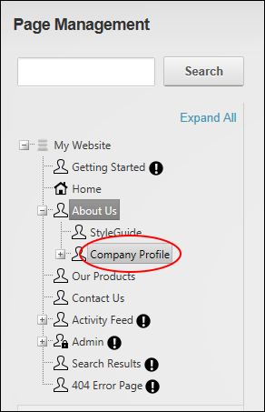
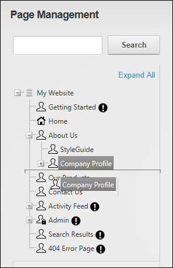
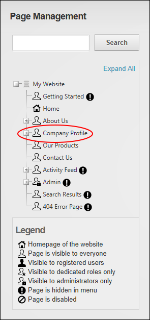

Moving Page Position in Menu
How to move a page to a new position in the site menu using the Pages module. DNN Platform users must be granted Edit Page permissions to the page where the Pages module is located and Edit Page permissions to the page that is being moved. Evoq Content users must be granted Add Content permissions to the page where the Pages module is located and Manage Settings permissions to the page that is being moved.
Moving a Page to a Parent Position
- Navigate to Admin >
 Page Management - OR - Go to a Pages modules.
Page Management - OR - Go to a Pages modules.
- Click and hold on the name of the page to be moved.

- Drag the page to the new location. The place where the page will be inserted is indicated by a dotted line. In this example, the page is being moved to the parent level and will be located between the About Us and Our Products page.

- Release to insert the page.
Moving a Page to a Child Position
- Navigate to Admin > Page Management - OR - Go to a Pages modules.
- Ensure the new parent page is visible.
- Click and hold on the name of the page to be moved.

- Drag the page over the top of the new parent page and when the parent page becomes highlighted, release the page to drop it in the chosen location.